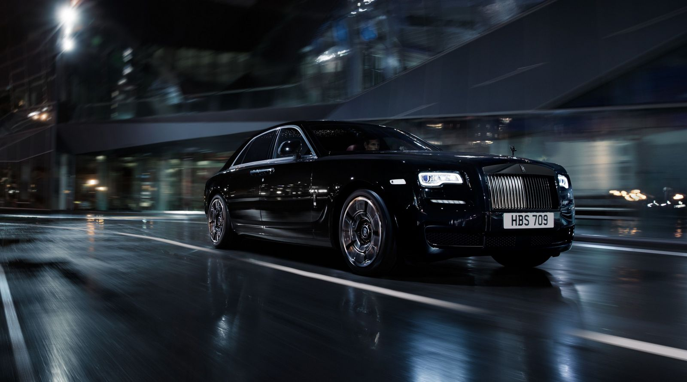
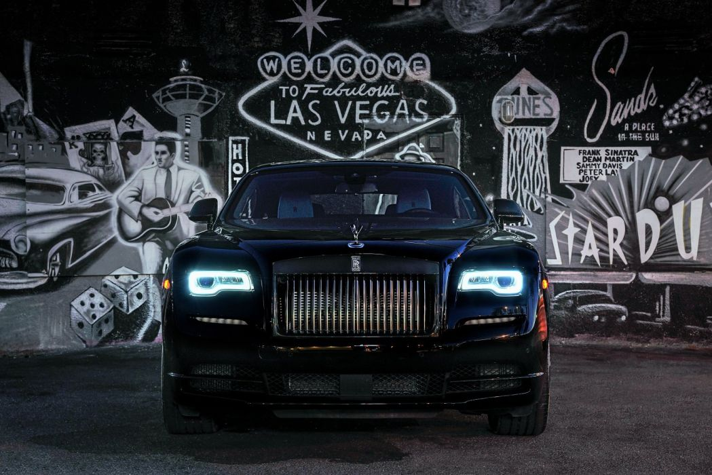

Rolls Royce Black Badge
Rolls
Royce produces one of the world’s most luxurious cars. Known for producing hand
crafted automobiles that promise a seamless “magical carpet ride” for its
customers. The Black Badge is for those who reject conformity and live on their
own terms. It’s for the innovators, trailblazers, rule-breakers — and above all
— those who dare. Black Badge is an
audacious alter ego, designed with a trim level that adds more luxury, power,
improved handling and a darkened aesthetic. Rolls-Royce will introduce their first-ever ghost black badge in 2022, which
is named after the largest diamond that has ever been found on earth.
Specifications: The new Rolls Royce has 591 horsepower. It takes 4.5 seconds
for the car to reach from 0-100 km/h. There is 45 kg paint on the rolls Royce.
A Rolls Royce is coated at least 7 times. The black badge has a typical design
of a Rolls Royce ghost. The rolls Royce has another exquisite accessory which
is nowhere to be seen on any other car. On all 4 tires of the car the logo of
rolls Royce embedded on the centre of the tire does not rotate with the wheel
and the also the spirit of ecstasy ornament. Tires have 21-inch rims with 44
layers of carbon fibre.
Fun Fact: BMW approached rolls Royce and paid $65 million to acquire
the rights to the name, symbol and the spirit of ecstasy. The best part of the
car is that there is no specific base price for any rolls Royce and all the
prices completely depends on the modifications made by the customer. Another
shining feature of the Royce is the Starlight headliner, an intricate series of
fibre-optic roof lights that recreate the night sky with 1,340 individual stars
which makes the ceiling of the Royce worth $17,000. This car has an Infiniti
logo which determines that there can be infinite modifications done in the car.
Insulation: To create a virtually silent ride rolls Royce adds
approximately 136 kilograms of acoustic insulation around the cabin. The tires
are modified and foam is added to the insides of the tire which reduces 9db of
the road.
Conclusion: With a price of $484,950.
All these marvellous features make the car irresistible and worth buying.

